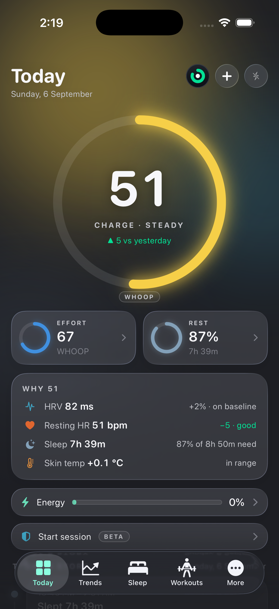
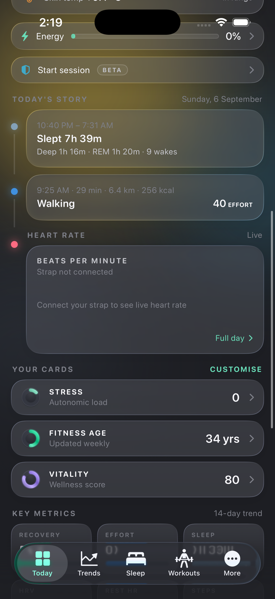
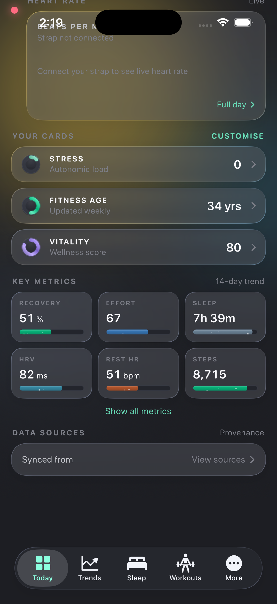
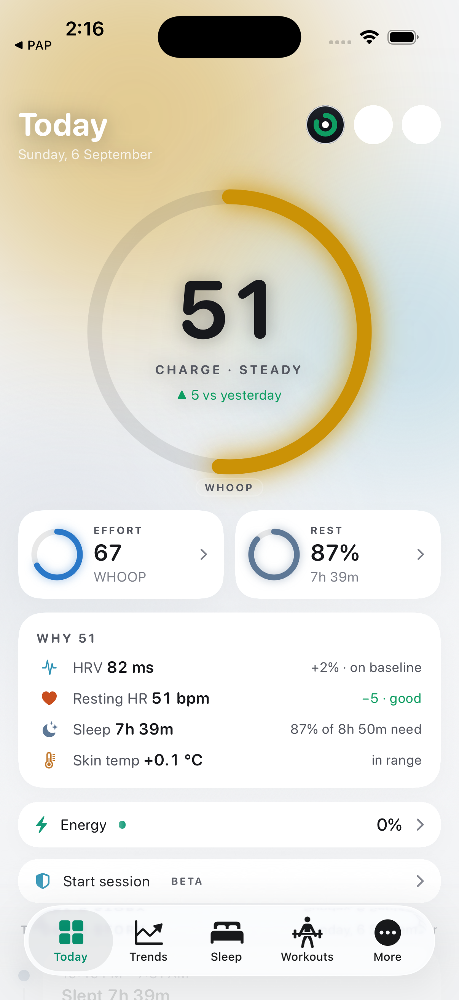

Debug build of the Kineva iOS app on the iPhone 17 Pro simulator, launched with --demo-seed (the app's own deterministic 120-day synthetic dataset). Same Repository accessors as the shipping Today; only the composition changed. Dark mode, plus one light-mode frame from the first pass.



